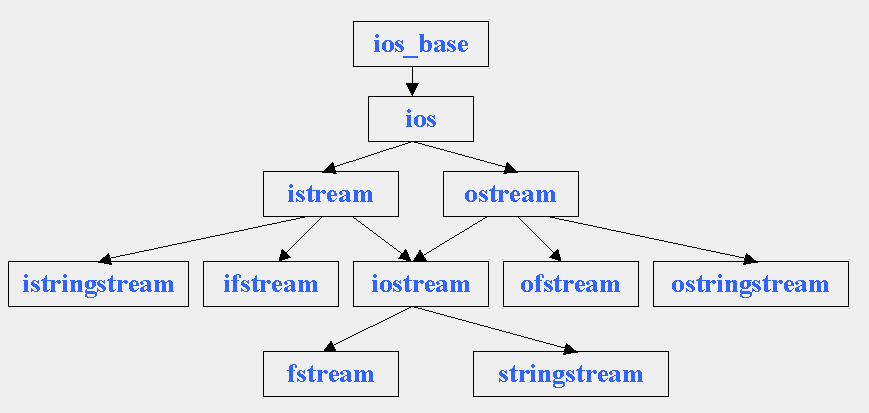

Le operazioni di input-ouput in C++
La gerarchia di classi stream
La Libreria Standard del C++ mette a disposizione, per l'esecuzione delle operazioni di input-output, un insieme di classi, funzioni e oggetti globali (tutti definiti, come sempre, nel namespace std). Fra questi, conosciamo già gli oggetti cin, cout e cerr (a cui bisogna aggiungere, per completezza, clog, che differisce cerr da in quanto opera con output bufferizzato), collegati ai dispositivi standard stdin, stdout e stderr; e conosciamo anche l'esistenza di varie funzioni che implementano gli overloads degli operatori di flusso "<<" (inserimento) e ">>" (estrazione), rispettivemente per la scrittura dei dati su cout o cerr, e per la lettura dei dati da cin.
Tutte le funzionalità di I/O del C++ sono definite in una decina di header-files. Il principale è <iostream>, che va sempre incluso. Alcuni altri sono inclusi dallo stesso <iostream>, per cui citeremo di volta in volta solo quelli necessari.
Alcune classi della Libreria gestiscono operazioni di I/O "ad alto livello", cioè indipendenti dal dispositivo, che può essere un'unità esterna (come i dispositivi standard a noi noti), un file, o anche un'area di memoria (in particolare una stringa); queste classi sono strutturate in un'organizzazione gerarchica: da un'unica classe base discendono, per eredità, tutte le altre. Ogni loro istanza è detta genericamente "stream" (flusso). Il concetto di stream è un'astrazione, che rappresenta un "qualcosa" da o verso cui "fluisce" una sequenza di bytes; in sostanza un oggetto stream può essere interpretato come un "file intelligente" (con proprietà e metodi, come tutti gli oggetti), che agisce come "sorgente" da cui estrarre (input), o "destinazione" in cui inserire (output) i dati.
Un altro concetto importante è quello della "posizione corrente" in un oggetto stream (file position indicator), che coincide con l'indice (paragonando lo stream a un array) del prossimo byte che deve essere letto o scritto. Ogni operazione di I/O modifica la posizione corrente, la quale può essere anche ricavata o impostata direttamente usando particolari metodi (come vedremo). A questo proposito precisiamo che la parola "inserimento", usata come sinonimo di operazione di scrittura, ha diverso significato in base al valore della posizione corrente: se questa è interna allo stream, i dati non vengono "inseriti", ma sovrascritti; se invece la posizione corrente è alla fine dello stream (cioè una posizione oltre l'ultimo byte), i nuovi dati vengono effettivamente inseriti.
La gerarchia di classi stream è illustrata dalla seguente figura:
 Tutte le classi della gerarchia, salvo ios_base, sono specializzazioni di template: il nome di ognuna è in realtà un sinonimo del nome (con prefisso basic_) di una classe template specializzata con argomento <char>. Per esempio:
ifstream è un sinonimo di: basic_ifstream<char>
ma, come già detto a proposito della classe string, noi siamo interessati solo al tipo char e quindi tratteremo direttamente delle classi specializzate e non dei template da cui provengono.
Le classi ios_base e ios
La classe base della gerarchia, ios_base, contiene proprietà e metodi che sono comuni sia alle operazioni di input che a quelle di output e non dipendono da parametri di template. Le stesse caratteristiche sono presenti nella sua classe derivata, ios, con la differenza che questa è una specializzazione con argomento char di
template <class T> class basic_ios,
le cui funzionalità dipendono dal parametro T. Dal nostro punto di vista, però, non ci sono parametri di template (assumendo sempre T=char), e quindi le due classi si possono considerare insieme come se fossero un'unica classe. Entrambe forniscono strumenti di uso generale per le operazioni di I/O, come ad esempio le funzioni di controllo degli errori, i flags per l'impostazione dei formati di lettura e/o scrittura, i modi di apertura dei files ecc... (molti di questi dati-membro sono enumeratori costituiti da un singolo bit in una posizione specifica, e si possono combinare insieme con operazioni logiche bit a bit). Entrambe le classi, inoltre, dichiarano i loro costruttori nella sezione protetta, e quindi non è possibile istanziarle direttamente; si devono invece utilizzare le classi derivate da ios, a partire da istream (per l'input) e ostream (per l'output), che contengono, per eredità, anche i membri definiti in ios e ios_base.
Le classi istream, ostream e iostream
La classe istream, derivata diretta di ios, contiene le funzionalità necessarie per le operazioni di input; in particolare la classe definisce un overload dell'operatore di flusso ">>" (estrazione), che determina il trasferimento di dati da un oggetto istream alla memoria. Sebbene non sia escluso che si possano costruire delle sue istanze nel programma, anche la classe istream, come già la sua genitrice ios, serve quasi esclusivamente per fornire proprietà e metodi alle classi derivate. Alla classe istream appartiene, come sappiamo, l'oggetto globale cin.
La classe ostream, derivata diretta di ios, contiene le funzionalità necessarie per le operazioni di output; in particolare la classe definisce un overload dell'operatore di flusso "<<" (inserimento), che determina il trasferimento di dati dalla memoria a un oggetto ostream. Come istream, ostream serve più che altro a fornire proprietà e metodi alle sue classi derivate. Alla classe ostream appartengono, come sappiamo, gli oggetti globali cout, cerr e clog.
La classe iostream, deriva, per eredità multipla, da istream e ostream, e ne riunisce le funzionalità, senza aggiungere nulla.
Le classi ifstream, ofstream e fstream
Le classi ifstream, ofstream e fstream servono per eseguire operazioni di I/O su file e derivano rispettivamente da istream, ostream e iostream, a cui aggiungono poche funzioni-membro (praticamente la open, la close e qualche altra di minore importanza). Per utilizzarle bisogna includere l'header-file <fstream>.
La classe ifstream serve per le operazioni di input. Normalmente i suoi oggetti sono associati a files di sola lettura, che possono essere sia in modo testo che in modo binario, ad accesso generalmente sequenziale.
La classe ofstream serve per le operazioni di output. Normalmente i suoi oggetti sono associati a files di sola scrittura, che possono essere sia in modo testo che in modo binario, ad accesso generalmente sequenziale.
Infine la classe fstream serve per le operazioni sia di input che di output. E' particolarmente indicata per operare su files binari ad accesso casuale.
Qualunque classe si usi, le operazioni di I/O si eseguono utilizzando gli operatori di flusso e ponendo l'oggetto associato al file come left-operand (al posto di cin o cout). In lettura, se il risultato dell'operazione è NULL (e quindi false, se convertito in tipo bool), vuol dire di solito che si è raggiunta la fine del file (eof); questo permette di inserire la lettura di un file in un ciclo while, in cui la stessa operazione di lettura funge da condizione per il proseguimento del ciclo.
Sono anche disponibili funzioni-membro (definite nelle classi genitrici istream e ostream) per la lettura e/o scrittura dei dati, il posizionamento nel file, la gestione degli errori, la definizione dei formati ecc..., come vedremo in dettaglio prossimamente.
Le classi istringstream, ostringstream e stringstream
Le classi istringstream, ostringstream e stringstream servono per eseguire pseudo operazioni di I/O su stringa (come la funzione sprintf del C) e derivano rispettivamente da istream, ostream e iostream, a cui aggiungono poche funzioni-membro. Per utilizzarle bisogna includere l'header-file <sstream>.
La classe istringstream serve per le operazioni di input. Un oggetto istringstream è sostanzialmente una stringa, dalla quale però si possono estrarre dati, come se fosse un dispositivo periferico o un file. Analogamente ai files, se il risultato di un'operazione di estrazione è NULL, significa che si è raggiunta la fine della stringa (eos).
La classe ostringstream serve per le operazioni di output. Un oggetto ostringstream è sostanzialmente una stringa, nella quale però si possono inserire dati, come se fosse un dispositivo periferico o un file. Le operazioni di inserimento possono anche modificare la dimensione della stringa, e quindi non è necessario effettuare controlli sul range. Questo fatto può essere di grande utilità perchè permette di espandere una stringa liberamente, in base alle necessità (per esempio, per preparare un output "formattato").
Infine la classe stringstream serve sia per le operazioni di input che di output.
Tipi definiti nella Libreria
La Libreria di I/O definisce alcuni tipi specifici (molti dei quali sono in realtà sinonimi, creati con typedef, di altri tipi, che a loro volta dipendono dall'implementazione). I principali sono (per ognuno di essi indichiamo, fra parentesi tonde, l'ambito o la classe in cui è definito, e, fra parentesi quadre, "normalmente implementato come ..."):
streamsize (namespace std) [sinonimo di int]
indica un numero di bytes consecutivi in un oggetto stream; questo tipo (come pure i successivi) è utilizzato come argomento in varie funzioni di I/Ostreamoff (namespace std) [sinonimo di long]
indica lo spostamento in byte da una certa posizione in un oggetto stream a un'altrafmtflags (ios_base) [tipo enumerato]
i suoi enumeratori controllano l'impostazione del formato di lettura o scrittura (vedere più avanti)iostate (ios_base) [tipo enumerato]
i suoi enumeratori controllano lo stato dell'oggetto stream dopo un'operazione (vedere più avanti)openmode (ios_base) [tipo enumerato]
i suoi enumeratori controllano il modo di apertura di un file (vedere prossimo paragrafo)seekdir (ios_base) [tipo enumerato]
i suoi enumeratori si riferiscono a particolari posizioni nell'oggetto stream, e sono:
ios_base::beg (posizione iniziale)
ios_base::cur (posizione corrente)
ios_base::end (posizione finale)pos_type (ios) [sinonimo di long]
è il tipo della posizione corrente nell'oggetto streamoff_type (ios) [sinonimo di long]
è sostanzialmente un sinonimo di streamoff, con la sola differenza che è definito nella classe ios anzichè nel namespace std
Modi di apertura di un file
Relativamente alle operazioni di I/O su file, bisogna precisare anzitutto che la costruzione di un oggetto stream e l'apertura del file associato all'oggetto sono due operazioni logicamente e cronologicamente distinte (anche se esiste un costruttore che fa entrambe le cose, come vedremo). Di solito si usa prima il costruttore di default dell'oggetto (che non fa nulla) e poi un suo particolare metodo (la funzione open) che gli associa un file e lo apre. Questo permette di chiudere il file (tramite un altro metodo, la funzione close) prima che l'oggetto sia distrutto e quindi riutilizzare l'oggetto stesso associandogli un altro file. Non possono coesistere due files aperti sullo stesso oggetto. Un file ancora aperto al momento della distruzione dell'oggetto viene chiuso automaticamente.
Un file può essere aperto in diversi modi, a seconda di come si impostano i seguenti flags (che sono enumeratori del tipo enumerato openmode):
ios_base::in
il file deve essere aperto in letturaios_base::out
il file deve essere aperto in scritturaios_base::ate
il file deve essere aperto con posizione (inizialmente) sull'eof (significa "at the end"); di default un file è aperto "at the beginning"ios_base::app
il file deve essere aperto con posizione (permanentemente) sull'eof (cioè i dati si potranno scrivere solo in fondo al file)ios_base::trunc
il file deve essere aperto con cancellazione del suo contenuto preesistente; se il file non esiste, viene creato (in tutti gli altri casi deve già esistere)ios_base::binary
il file deve essere aperto in modo "binario", cioè i dati devono essere scritti o letti esattamente come sono; di default il file é aperto in modo "testo", nel qual caso, in output, ogni carattere newline può (dipende dall'implementazione!) essere trasformato nella coppia di caratteri carriage-return/line-feed (e viceversa in input)Ogni flag è rappresentato in una voce memoria da 16 o 32 bit, con un solo bit diverso da zero e in una posizione diversa da quella dei bit degli altri flags. Questo permette di combinare insieme due modi con un'operazione di OR bit a bit, oppure di verificare la presenza di un singolo modo in una combinazione esistente, estraendolo con un'operazione di AND bit a bit. Per esempio, la combinazione:
ios_base::in | ios_base::out
indica che il file può essere aperto sia in lettura che in scrittura. Va precisato, tuttavia, che il significato di alcune combinazioni dipende dall'implementazione e quindi va verificato "sperimentalmente", consultando il manuale del proprio sistema. Per esempio, nelle ultime versioni dello standard, il flag ios_base::out non può mai stare da solo, ma deve essere combinato con altri.Per concludere, i flags ios_base::in e ios_base::out sono anche usati dai costruttori delle classi che gestiscono l'I/O su stringa.
Operazioni di output
Nella classe ostream sono definite varie funzioni-membro per l'esecuzione delle operazioni di output. Queste funzioni sono utilizzate direttamente per la scrittura sui dispositivi standard stdout e stderr e sono ereditate nelle classi ofstream, fstream, ostringstream e stringstream per la scrittura su file e su stringa.
Metodi operator<<
Alcuni metodi di ostream definiscono tutti i possibili overloads di operator<< con argomento di tipo nativo (compresi i tipi ottenuti mediante i prefissi short, long, signed, unsigned e const). I dati in memoria vengono convertiti in stringhe di caratteri (in free-format, o con un formato specifico, come vedremo) e poi inseriti in *this. Per quello che riguarda i puntatori (a qualunque tipo), è definito l'overload con argomento void*, che scrive il valore dell'indirizzo in formato esadecimale. Fa eccezione il caso di puntatore a carattere, per il quale è definito un overload specifico con argomento char*: in questo caso non viene scritto l'indirizzo, ma il carattere puntato, e tutti i caratteri successivi finchè non si incontra il valore '\0' (interpretato come terminatore di una stringa). Come ben sappiamo, è anche possibile definire ulteriori overloads di operator<<, con argomento di tipo definito dall'utente; questa volta, però, le funzioni non possono essere metodi di ostream, ma funzioni esterne: nella risoluzione di una chiamata, il compilatore si comporterà in ogni caso correttamente, in quanto cercherà, non prima fra i metodi e poi fra le funzioni esterne (che hanno lo stesso livello di preferenza), ma sempre prima fra le funzioni (metodi o no) in cui l'argomento corrisponde esattamente e poi fra quelle in cui la corrispondenza è ottenuta tramite conversione implicita di tipo (questo succede in particolare anche quando il nostro tipo è convertibile implicitamente in un tipo nativo e quindi selezionerebbe un metodo se questo avesse la precedenza). Questa regola offre un grande vantaggio, perchè permette di scrivere ulteriori overloads di operator<< senza bisogno di modificare la classe ostream.
Altre funzioni-membro di ostream
Oltre a operator<<, sono definiti in ostream i seguenti metodi (citiamo i più importanti):
ostream& ostream::put(char c)
inserisce il carattere c nella posizione corrente di *this; ritorna *thisostream& ostream::write(char* p, streamsize n)
inserisce nella posizione corrente di *this una sequenza di n bytes, a partire dal byte puntato da p; ritorna *this. A differenza di operator<<, scrive i dati binari così come sono in memoria, senza prima convertirli in stringhe di caratteri.
NOTA: questo metodo è particolarmente indicato per scrivere dati di qualsiasi tipo nativo (per esempio dati binari su file), operando una conversione di tipo puntatore nella chiamata. Per esempio, supponendo che out sia il nome dell'oggetto stream e val un valore intero o floating, si può scrivere val in out con la chiamata:
out.write((char*)&val,sizeof(val));
notare il casting, che reintepreta l'indirizzo di val come indirizzo di una sequenza di sizeof(val) bytes. Nel caso invece che il tipo sia definito dall'utente, il discorso è un po' più complicato: la soluzione più "elegante" è quella della cosidetta "serializzazione", che consiste nel creare (nella classe dell'oggetto da scrivere) un metodo specifico, che scriva in successione i diversi membri dell'oggetto.pos_type ostream::tellp()
ritorna la posizione correnteostream& ostream::seekp(pos_type pos)
sposta la posizione corrente in pos; ritorna *this; questo metodo (come il suo overload che segue) si usa principalmente quando l'output è su file ad accesso casualeostream& ostream::seekp(off_type off, ios_base::seekdir seek)
sposta la posizione corrente di off bytes a partire dal valore indicato dall'enumeratore seek; ritorna *this; off può anche essere negativo (deve esserlo quando seek coincide con ios_base::end e deve non esserlo quando seek coincide con ios_base::beg); in ogni caso se l'operazione tende a spostare la posizione corrente fuori dal range, la seekp non viene eseguita e la posizione corrente resta invariata; la posizione corrispondente alla fine dello stream (cioè eof o eos) è considerata ancora nel range.
Funzioni virtuali di output
Le funzioni-membro di ostream non sono virtuali, per motivi di efficienza, dato che in un programma le operazioni di I/O sono in genere molto frequenti. Tuttavia si può essere talvolta nella necessità di mandare in output un oggetto di tipo polimorfo, lasciando alla fase di esecuzione del programma la scelta del tipo "concreto" fra quelli derivati da un'unica classe base astratta. Per ottenere questo risultato, bisogna procedere nel seguente modo (supponiamo di chiamare My_base la classe base astratta):
dichiarare in My_base la funzione virtuale pura (che chiamiamo ins):
virtual ostream& ins(ostream& out) const = 0; // scrive *this su outridefinire ins in tutte le classi derivate da My_base, in modo che ogni funzione svolga l'operazione di scrittura appropriata per la sua classe
definire il seguente overload di operator<< (ovviamente come funzione esterna):
ostream& operator<<(ostream& out, const My_base& ogg)
{ return ogg.ins(out); }Ciò assicura che operator<< utilizzi, tramite la funzione virtuale ins, la giusta operazione di output in istruzioni del tipo:
cout << r;
quando r è definito come riferimento a My_base. Questa tecnica è di utilità generale per fornire operazioni che si comportano come funzioni virtuali, ma con la selezione dinamica basata sul secondo argomento.
Metodi specifici per l'output su file
Nella classe ofstream, derivata di ostream (e anche nella classe fstream, derivata di iostream, per le operazioni comuni all'output e all'input), sono definiti alcuni metodi che, insieme a quelli ereditati dalla classe base, servono per la scrittura su file. Il più importante di questi è il metodo open:
void ofstream::open(const char* filename, ios_base::openmode mode = ....)
void fstream::open(const char* filename, ios_base::openmode mode = ....)che ha due argomenti: il primo, filename, è il nome del file da aprire (nota: è una stringa del C, non un oggetto string!), il secondo, mode, rappresenta il modo di apertura del file ed è di default, con valore che dipende dalla classe e precisamente:
in ofstream (sola scrittura):
mode = ios_base::out | ios_base::trunc
(notare: se il file esiste, viene "troncato", se non esiste viene creato)in fstream (lettura e scrittura):
mode = ios_base::out | ios_base::in
(notare: il file deve esistere)Se si verifica un errore, non appaiono messaggi, ma nessuna delle successive operazioni sul file viene eseguita. Ci si può accorgere dell'errore interrogando lo stato dell'oggetto (come vedremo).
Fra gli altri metodi definiti in ofstream citiamo:
void ofstream::close()
chiude il file senza distruggere l'oggetto *this, a cui si può così associare un altro file (oppure di nuovo lo stesso, per esempio con modi di apertura diversi)costruttore di default
crea l'oggetto senza aprire nessun file; deve ovviamente essere seguito da una opencostruttore con esattamente gli stessi argomenti della open (compresi i defaults)
riunisce insieme le operazioni del costruttore di default e della open (a cui è ovviamente alternativo); anche se generalmente il file resta aperto fino alla distruzione dell'oggetto, la "prima" apertura tramite costruttore al posto della open non preclude la possibilità che il file venga chiuso "anticipatamente" (con la close) e che poi venga associato all'oggetto un altro file (con una successiva open)bool ofstream::isopen()
ritorna true se esiste un file aperto associato all'oggettoLa classe fstream definisce esattamente gli stessi metodi di ofstream (l'unica differenza è nel modo di apertura di default del file, dato dal secondo argomento del costruttore come nella open corrispondente).
Metodi specifici per l'output su stringa
Nella classe ostringstream, derivata di ostream (e anche nella classe stringstream, derivata di iostream, per le operazioni comuni all'output e all'input), sono definiti alcuni metodi che, insieme a quelli ereditati dalla classe base, servono per la scrittura su stringa. I più importanti sono:
ostringstream::ostringstream(ios_base::openmode mode = ios_base::out)
costruttore di default (con un argomento di default )ostringstream::ostringstream(const string& str, ios_base ..come sopra.. )
costruttore per copia da un oggetto string (con il secondo argomento di default )string ostringstream::str()
crea una copia di *this e la ritorna convertita in un oggetto string. Questo metodo è molto utile, in quanto gli oggetti di ostringstream (e delle altre classi della gerarchia stream) non possiedono le funzionalità delle stringhe; per poterli utilizzare come stringhe è prima necessario convertirli in oggetti string.void ostringstream::str(const string& str)
questo secondo overload di str esegue l'operazione inversa del precedente: sostituisce in *this una copia di un oggetto stringLa classe stringstream definisce esattamente gli stessi metodi di ostringstream, con la differenza che l'argomento di default dei costruttori (mode) è:
mode = ios_base::out | ios_base::in
Operazioni di input
Nella classe istream sono definite varie funzioni-membro per l'esecuzione delle operazioni di input. Queste funzioni sono utilizzate direttamente per la lettura dal dispositivo standard stdin e sono ereditate nelle classi ifstream, fstream, istringstream e stringstream per la lettura da file e da stringa.
Metodi operator>>
Alcuni metodi di istream definiscono tutti i possibili overloads di operator>> con argomento di tipo nativo (compresi i tipi ottenuti mediante i prefissi short, long, signed e unsigned). Da *this vengono estratte stringhe di caratteri, che sono interpretate secondo un certo formato e poi convertite nel tipo rappresentato dall'argomento, in cui vengono infine memorizzate. Ognuna di queste stringhe (che chiamiamo "stringhe di input") è delimitata da uno o più "spazi bianchi" (così sono definiti i caratteri: spazio, tabulazione, fine riga, fine pagina e ritorno carrello); tutti gli spazi bianchi che precedono e seguono una stringa di input vengono "scartati", cioè eliminati dallo stream e non trasferiti in memoria (anche quando l'argomento è di tipo char, nel qual caso non viene estratta una stringa, ma un singolo carattere, pur sempre tuttavia dopo avere "scartato" tutti gli eventuali spazi bianchi che lo precedono). Pertanto ogni singola esecuzione di operator>> converte e trasferisce in memoria una e una sola stringa di input alla volta, qualunque sia la dimensione dello stream. I caratteri della stringa di input, inoltre, devono essere tutti validi, in relazione al tipo dell' argomento. Per esempio, se il dato da leggere è di tipo int e la stringa di input contiene un "punto", questa viene troncata in modo da lasciare il "punto" come primo carattere della prossima stringa di input da estrarre (vedere la gestione degli errori nella prossima sezione).
Per quello che riguarda i puntatori (a qualunque tipo), è definito un overload di operator>> con argomento void*, che converte la stringa di input in un numero intero e lo memorizza nell'argomento (la cosa ha però scarso interesse, in quanto non si possono mai assegnare valori agli indirizzi). E' importante invece il caso di puntatore a carattere, per il quale è definito un overload specifico con argomento char*: in questo caso la stringa di input non viene convertita, ma trasferita così com'è nell'area di memoria puntata dall'argomento; alla fine viene aggiunto automaticamente il carattere '\0' come terminatore della stringa memorizzata.
Per ciò che concerne la definizione di ulteriori overloads di operator>> con argomento di tipo definito dall'utente, e la scelta fra i metodi e le funzioni esterne, vedere le considerazioni fatte a proposito di operator<<.
Altre funzioni-membro di istream
La principale differenza fra gli overloads di operator>> e gli altri metodi di istream che eseguono operazioni di lettura consiste nel fatto che i primi estraggono stringhe di input, senza spazi bianchi e interpretate secondo un certo formato (formatted input functions), mentre gli altri metodi estraggono singoli bytes (o sequenze di bytes) senza applicare nessun formato (unformatted input functions) e senza escludere gli spazi bianchi. Vediamone i principali:
int istream::get()
estrae un byte e lo ritorna al chiamante. Nota: il valore di ritorno è sempre positivo (in quanto è definito int e contiene un solo byte, cioè al massimo il numero 255; pertanto un valore di ritorno negativo indica convenzionalmente che si è verificato un errore, oppure che la posizione corrente era già sulla fine dello stream (cioè su eof o eos)istream& istream::get(char& c)
estrae un byte e lo memorizza in c; ritorna *thisistream& istream::get(char* p, streamsize n, char delim='\n')
estrae n-1 bytes e li memorizza nell'area puntata da p (facendo seguire il carattere '\0' come terminatore della stringa memorizzata); ritorna *this; il processo di estrazione può essere interrotto in anticipo, per uno dei seguenti motivi:
è stata raggiunta la fine dello stream;
è stato incontrato il carattere delim; in questo caso delim non viene estratto e la posizione corrente si attesta sullo stesso delim
istream& istream::getline(char* p, streamsize n, char delim='\n')
è identica alla get precedente, con due differenze:
se incontra il carattere delim non lo estrae (come nella get), ma la posizione corrente si attesta dopo delim (cioè delim viene "saltato")
se completa l'estrazione di n-1 bytes senza incontrare delim, viene impostata una condizione di errore; in pratica ciò vuol dire che l'argomento n serve per imporre la condizione:
posizione di delim - posizione corrente < nistream& istream::read(char* p, streamsize n)
differisce dalle funzioni precedenti per il fatto che non ha delimitatori (a parte la fine dello stream) e estrae n bytes (senza aggiungere il carattere '\0' in fondo); e quindi non legge stringhe di caratteri, ma dati binari di qualsiasi tipo (vedere la NOTA a proposito del metodo write di ostream)streamsize istream::readsome(char* p, streamsize n)
come la read, salvo il fatto che ritorna il numero di bytes effettivamente lettiistream& istream::ignore(streamsize n=1, int delim=EOF)
"salta" i prossimi n bytes, oppure i prossimi bytes fino a delim (compreso); il default di delim (EOF) è una costante predefinita che indica la fine dello stream (normalmente implementata con il valore -1); ignore serve soprattutto per "saltare" caratteri invalidi nella lettura formattata da una stringa di inputI metodi di interrogazione e modifica diretta della posizione corrente sono: tellg e seekg (in 2 overloads): hanno gli stessi argomenti e svolgono le stesse operazioni dei corrispondenti tellp e seekp definiti in ostream.
Metodi specifici per input da file e da stringa
Nelle classi ifstream e istringstream, derivate di istream, sono definiti esattamente gli stessi metodi che si trovano rispettivamente in ofstream e ostringstream. L'unica differenza sta nel default dell'argomento mode della open e dei costruttori, che in questo caso è:
mode = ios_base::in
Stato dell'oggetto stream e gestione degli errori
A ogni oggetto stream è associato uno "stato", impostando e controllando il quale è possibile gestire gli errori e le condizioni anomale nelle operazioni di input-output.
Lo stato dell'oggetto è rappresentato da un insieme di flags (che sono enumeratori del tipo enumerato iostate, definito nella classe ios_base), ciascuno dei quali (come gli enumeratori del tipo openmode) può essere combinato con gli altri con un'operazione di OR bit a bit e separato dagli altri con un'operazione di AND bit a bit. I flags sono i seguenti:
ios_base::goodbit
finora tutto bene e la posizione corrente non è sulla fine dello stream; nessun bit è "settato" (valore 0)ios_base::failbit
si è verificato un errore di I/O, oppure si è tentato di eseguire un'operazione non consentita (per esempio la open di un file che non esiste)ios_base::badbit
si è verificato un errore di I/O irrecuperabileios_base::eofbit
la posizione corrente è sulla fine dello stream; un successivo tentativo di lettura imposta anche failbitLa classe ios, derivata di ios_base, fornisce alcuni metodi per la gestione e il controllo dello stato:
- ios_base::iostate ios::rdstate() const
ritorna lo stato che risulta dall'ultima operazionevoid ios::clear(iostate st=goodbit)
imposta lo stato con st (cancellando il valore precedente); chiamando clear() senza argomenti si imposta goodbit, cioè si "resettano" i flags di errorevoid ios::setstate(iostate st)
aggiunge il flag st allo stato corrente, eseguendo l'istruzione:
clear(rdstate() | st );bool ios::good() const
ritorna rdstate() == goodbitbool ios::fail() const
ritorna bool(rdstate() & failbit)bool ios::bad() const
ritorna bool(rdstate() & badbit)bool ios::eof() const
ritorna bool(rdstate() & eofbit)ios::operator void*() const
ritorna NULL se fail() | bad() è true; altrimenti ritorna this (che però, essendo convertito in un puntatore a void, non può essere dereferenziato)
NOTA: questo (strano) metodo necessita di un chiarimento: é noto che il casting a puntatore a void non é mai necessario, in quanto un puntatore a void può puntare a qualsiasi tipo di oggetto; quindi anche il semplice nome dell'oggetto può essere reinterpretato come suo casting a puntatore a void (!!!). In pratica il compilatore, quando incontra l'oggetto come operando in una posizione che non gli compete, prima di segnalare l'errore cerca se nella classe a cui appartiene l'oggetto é definito un overload del casting a puntatore a void e, se lo trova, lo applica. Nel nostro caso il metodo ritorna normalmente this e quindi un espressione del tipo:
cout << cout;
scrive in cout il suo indirizzo! Se però si è verificata una condizione di errore, il metodo ritorna NULL e cioè false, se il nome dell'oggetto è inserito in un'espressione logica; questo spiega perchè un'operazione di lettura può funzionare anche come istruzione di controllo in un ciclo o in un costrutto if, come nell'esempio che segue:
while ( cin >> .... )
infatti l'operazione >> ritorna cin, che viene convertito da operator void*: questo a sua volta ritorna l'indirizzo di cin finchè non ci sono errori (e quindi true, essendo un indirizzo sempre diverso da zero) e il ciclo prosegue; ma quando il programma tenta di leggere la fine dello stream, si imposta il flag failbit e quindi operator void* ritorna NULL interrompendo il ciclo.bool ios::operator !() const
ritorna bool(fail() | bad())
NOTA: le espressioni: if(cin) e if(!!cin) sono equivalenti (!),
mentre le espressioni: if(cin) e if(cin.good()) non sono equivalenti, in quanto la prima non controlla il flag eofbitQuando è impostato un qualunque flag diverso da goodbit, nessuna funzione non const definita nell'oggetto stream può essere eseguita (senza messaggi di errore: semplicemente le successive istruzioni con operazioni di I/O non hanno alcun effetto); tuttavia lo stato può essere "resettato" chiamando la clear (successivamente, però, bisogna rimuovere la causa dell'errore se si vuole che le operazioni di I/O riprendano a essere regolarmente eseguite).
Se, durante un'operazione di lettura formattata da una stringa di input, si incontra un carattere non ammissibile in relazione al tipo di dato da leggere, abbiamo già detto che la stringa di input viene "spezzata" in due: la prima, su cui viene normalmente eseguita la lettura, termina lasciando fuori il carattere invalido; la seconda comincia con il carattere invalido (che, se è tale anche in relazione al tipo del successivo dato da leggere, deve essere "saltato" chiamando la ignore). Per quanto riguarda lo stato, il comportamento è diverso a seconda che il carattere invalido sia o meno il primo carattere della stringa di input:
se non è il primo, lo stato resta definito dal flag goodbit (per la successiva operazione si può chiamare la ignore senza la clear);
se è il primo, è impostato il flag failbit (bisogna chiamare la clear prima della ignore se si vuole che questa abbia effetto)
Errori gestiti dalle eccezioni
Per una gestione corretta degli errori, sarebbe opportuno controllare lo stato dopo ogni operazione di I/O. Se però le operazioni sono molte, la cosa non risulta molto comoda, anche in considerazione del fatto che gli errori sono in generale poco frequenti. In particolare le operazioni di output sono controllate assai raramente (benchè ogni tanto anche loro falliscano): di solito si verifica che, dopo una open, il file sia stato aperto correttamente, e niente di più.
Diverso è il discorso se si riferisce alle operazioni di input: qui i possibili errori sono vari e diversi: formati sbagliati, errori umani nella immissione dei dati ecc..., senza contare il fatto che bisogna sempre controllare il raggiungimento della fine dello stream. Pertanto l'esame dello stato dopo un'operazione di lettura è quasi sempre necessario.
Tuttavia, come alternativa alla disseminazione di istruzioni if e switch nel programma, è possibile gestire gli errori di input-output anche mediante le eccezioni. A questo scopo è definito nella classe ios_base un oggetto del tipo enumerato iostate (exception mask), che contiene un insieme di flags di stato: quando un'operazione di I/O imposta uno di questi flags, viene generata un'eccezione di tipo ios_base::failure (failure è una classe "annidata" in ios_base) che può essere catturata e gestita da un blocco catch:
catch(ios_base::failure) { ..... }Di default l'exception mask è vuoto (cioè di default gli errori di I/O non generano eccezioni), ma è possibile cambiarne il contenuto chiamando il metodo exceptions di ios:
void ios::exceptions(iostate em) che imposta l'exception mask con em.
Esiste anche un overload di exceptions senza argomenti che ritorna l'exception mask corrente:
ios_base::iostate ios::exceptions() constCon i due overloads di exceptions è possibile circoscrivere l'uso delle eccezioni in aree precise del programma; per esempio:
ios_base::iostate em = cin.exceptions(); salva l'exception mask corrente (no eccezioni) in em cin.exceptions(ios_base::badbit|ios_base::failbit); imposta l'exception mask con badbit e failbit try { ... cin >> ...} blocco delle istruzioni di I/O che possono generare eccezioni catch(ios_base::failure) { ..... } blocco di gestione delle eccezioni cin.exceptions(em); ripristina l'exception mask precedente (no eccezioni)
Formattazione e manipolatori di formato
Abbiamo detto che le funzioni operator>> (in istream) e operator<< (in ostream) si distinguono da tutti gli altri metodi delle loro classi per il fatto che eseguono operazioni di I/O formattate: in particolare operator>> converte una stringa di input (delimitata da spazi bianchi) nel dato da memorizzare, mentre operator<< converte il dato da scrivere in una stringa, secondo un certo formato.
Se non si modificano i defaults, i formati, sia di lettura che scrittura, sono predefiniti e obbediscono a determinate regole; per esempio: in output non sono introdotti spazi bianchi (free-format), i numeri sono in base decimale (salvo gli indirizzi, che sono in esadecimale), i dati floating sono scritti con al più sei cifre significative ecc... In tutti gli esempi e gli esercizi visti finora si sono sempre usati (salvo raro casi) i formati predefiniti.
A volte però il programma ha bisogno di utilizzare formati particolari, per esempio per incolonnare i dati, oppure per scrivere i numeri con una base diversa, o in notazione scientifica ecc... E quindi, come già in C con gli specificatori di formato (che abbiamo visto all'inizio di questo corso), così anche in C++ con altri strumenti, è possibile impostare, nelle operazioni di I/O, formati diversi da quello predefinito. A questo scopo è definito nella classe ios_base il tipo enumerato fmtflags, i cui enumeratori (detti format flags) controllano il formato, sia di lettura che di scrittura.
I format flags sono all'incirca una ventina. Ciascuno di loro imposta una particolare opzione, che può essere combinata con altre (con le solite operazioni bit a bit). Come già per la gestione dello stato, esistono anche vari metodi (definiti in ios_base e in ios) che permettono di impostare un insieme di format flags, di "resettarli", di combinarli con altri già impostati ecc...Non ci dilungheremo su questo argomento, perchè, "dal punto di vista dell'utente", è molto più comodo e rapido gestire il formato tramite i cosidetti "manipolatori", i quali possono utilizzare i format flags per modificare il formato nelle stesse istruzioni in cui i dati sono letti o scritti. In generale ogni manipolatore aggiunge (o rimuove) un'opzione. L'effetto di un manipolatore su un oggetto stream è permanente (salvo in un caso, che vedremo), fino a un eventuale manipolatore che lo contraddice o fino alla distruzione dell'oggetto.
Manipolatori senza argomenti
I manipolatori sono funzioni esterne alle classi, definite direttamente in std e raggruppate in alcuni header-files (tutti inclusi da <iostream>). Per capire come "lavorano", bisogna anzitutto sapere che le classi istream e ostream forniscono un ulteriore overload dell'operatore di flusso, con un puntatore a funzione come operando (prendiamo il caso di ostream, che è il più interessante, ma teniamo presente che quanto si dirà vale anche per istream):
ostream& ostream::operator<<(ostream& (*pf)(ostream&))
{ return pf(*this); }vediamo ora come il C++ risolve un'istruzione del tipo:
cout << fun;
(dove fun è una funzione che abbia (guarda caso) valore di ritorno di tipo ostream e un argomento di tipo ostream ):
trova che l'overload di operator<< con operando puntatore a funzione pf è proprio quello "giusto" e sostituisce fun a pf;
in operator<< esegue fun(cout) e ritorna il valore di ritorno di fun
supponiamo ora che fun chiami un metodo della classe del suo argomento e ritorni by reference l'argomento stesso (cioè cout, nel nostro esempio); supponiamo inoltre che il metodo chiamato da fun imposti o rimuova un format flag. Ne consegue che l'istruzione di cui sopra ha l'effetto di modificare il formato (e quindi fun è un manipolatore); inoltre, per il fatto che fun ritorna *this, si può inserire il suo nome (senza argomenti e senza parentesi) all'interno di una sequenza di operazioni di flusso; per esempio (anticipiamo che hex è un manipolatore):
cout << hex << 1234;
fa sì che il numero 1234 (e tutti i successivi, fino a disposizione contraria) venga scritto in esadecimale.Alcuni manipolatori sono in due versioni: quella con un certo nome imposta un format flag, quella con lo stesso nome e con prefisso no lo rimuove; di solito la versione con prefisso no è di default. I principali manipolatori sono i seguenti:
dec interi in base decimale (default) hex interi in base esadecimale oct interi in base ottale fixed per i numeri floating corrisponde allo specificatore %f del C scientific per i numeri floating corrisponde allo specificatore %e del C left allinea a sinistra in un campo di larghezza prefissata (vedere più avanti) right allinea a destra in un campo di larghezza prefissata (default) [no]boolalpha rappresenta un valore booleano con true e false anzichè con 1 e 0 [no]showbase aggiunge il prefisso 0 per i numeri ottali e 0x per i numeri esadecimali [no]showpoint mostra comunque il punto decimale nei numeri floating [no]showpos scrive il segno + davanti ai numeri positivi [no]uppercase scrive lettere maiuscole nelle notazioni esadecimale (X) e esponenziale (E) [no]skipws ignora gli spazi bianchi (il default è skipws) flush scarica il buffer di output ends scrive '\0' e scarica il buffer di output endl scrive '\n' e scarica il buffer di output gli ultimi tre manipolatori non modificano il formato ma eseguono un'operazione (e quindi il loro effetto non è permanente, come negli altri casi)
Manipolatori con argomenti
Abbiamo visto che un manipolatore è una funzione che viene eseguita al posto di un puntatore a funzione e quindi il suo nome va specificato, come operando in un'operazione di flusso, senza parentesi e senza argomenti. Esistono tuttavia manipolatori che accettano un argomento, cioè che vanno specificati con un valore fra parentesi. In questi casi (consideriamo al solito solo l'output) l'overload di operator<< non deve avere come argomento un puntatore a funzione, ma un oggetto di un tipo specifico, restituito come valore di ritorno dalla funzione che appare come operando e inizializzato con il valore del suo argomento. Chiariamo quanto detto con un esempio; questa volta l'istruzione è:
cout << fun(x) << .... ;
dove supponiamo che l'argomento x sia di tipo int. La funzione fun (eseguita con precedenza) non deve fare altro che restituire un oggetto (chiamiamo _fun il suo tipo) inizializzato con x, cioè:
_fun fun(int x) { return _fun(x); }
a sua volta la classe (o meglio, la struttura) _fun deve essere costituita dai seguenti membri:
int i;
_fun(int x) : i(x) { }
(il costruttore usa l'argomento x per inizializzare il membro i)
L'informazione fornita dall'argomento x del manipolatore fun è perciò memorizzata nel membro i della struttura _fun. Ormai il problema è risolto, basta avere un overload di operator<< (che questa volta supponiamo sia una funzione esterna) con right-operand di tipo _fun:
ostream& operator<<(ostream& os, _fun& f)
che chiami, per l'impostazione del formato, un opportuno metodo di os, utilizzando l'informazione trasmessa nel membro i dell'oggetto f.Nelle precedenti versioni dello standard esisteva una sola struttura, di nome smanip, e un solo overload di operator<< (con right-operand di tipo smanip) per tutti i manipolatori con argomenti; la struttura smanip conteneva, come ulteriore membro, un puntatore a funzione, da sostituire ogni volta con il manipolatore appropriato. A partire dal compilatore gcc 3.2 smanip è "deprecated" e al suo posto ci sono tante strutture (e tanti overloads di operator<<) quanti sono i manipolatori (in realtà questo non è un problema, perchè i manipolatori con argomenti sono pochi); in compenso ogni operazione è molto più veloce, in quanto chiama la sua funzione direttamente, senza passare attraverso i puntatore a funzione.
I manipolatori con argomenti, forniti dalla Libreria, sono definiti in <iomanip> (che deve essere incluso insieme a <iostream>) e sono 5: setw, setfill, setprecision, setiosflag e resetiosflag; tralasciamo gli ultimi due, i quali hanno come argomento direttamente un format flag (o una combinazione di format flags), coerentemente con il fatto che abbiamo deciso di non descrivere singolarmente i format flags e i metodi che li gesticono (le stesse operazioni si fanno più comodamente ed "elegantemente" usando gli altri manipolatori). Procediamo invece con la descrizione dei primi tre:
setw(int w)
specifica che nella prossima operazione di output il dato dovrà essere scritto in un campo con un numero minimo di caratteri w: se il numero effettivo è superiore, tutti i caratteri vengono scritti normalmente, se è inferiore, il dato è scritto all'interno del campo e allineato di default a destra (oppure a sinistra se è stato specificato il manipolatore left); nella posizione che compete ai caratteri rimanenti, viene scritto il cosidetto "carattere di riempimento", che di default è uno spazio (codice 32), ma che può anche essere modificato con setfill. Il manipolatore setw è l'unico che non ha effetto permanente, ma modifica il formato solo relativamente alla prossima operazione (dalla successiva il formato tornerà com'era prima di setw)setfill(char c)
stabilisce che il "carattere di riempimento" d'ora in poi sarà csetprecision(int p)
(p deve essere non negativo, altrimenti il manipolatore non ha effetto)
influenza esclusivamente l'output di numeri floating e il suo effetto è diverso, a seconda di come è impostato il formato floating; questo può assumere tre diverse configurazioni:
fixed: è impostato dal manipolatore fixed; utilizza la rappresentazione:
[parte intera].[parte decimale]
(corrisponde allo specificatore di formato %f del C); p indica il numero esatto di cifre della parte decimale (compresi eventuali zeri a destra); l'ultima cifra decimale è arrotondata; se p è zero, è arrotondata la cifra delle unità e il punto decimale non è scritto (a meno che non sia stato specificato il manipolatore showpoint)scientific: è impostato dal manipolatore scientific; utilizza la rappresentazione:
[cifra intera].[parte decimale]e[esponente]
(corrisponde allo specificatore di formato %e del C); come fixed, p indica il numero esatto di cifre della parte decimale e l'ultima cifra decimale è arrotondata; scrive E al posto di e se è stato specificato il manipolatore uppercase; l'esponente è costituito dal segno, seguito da 2 o 3 (dipende dall'implementazione) cifre interegeneral: è impostato di default; sceglie, fra le rappresentazioni di fixed e di scientific, quella più conveniente (corrisponde allo specificatore di formato %g del C); p indica il numero massimo di cifre significative; l'ultima cifra significativa è arrotondata; gli zeri non significativi della parte decimale non sono scritti; se il numero è arrotondato a intero non è scritto neppure il punto decimale (a meno che non sia stato specificato il manipolatore showpoint).
NOTA: questo è l'unico caso in cui non esiste un manipolatore per ripristinare il default. Per tornare al formato general dopo che è stato impostato fixed o scientific, bisogna usare il metodo setf (definito in ios_base), nel seguente modo (supponiamo per esempio che l'oggetto stream sia cout):
cout.setf(ios_base::fmtflags(0),ios_base::floatfield);
Manipolatori definiti dall'utente
Applicando gli schemi riportati negli esempi di manipolatori con e senza argomenti, un programmatore può definire nuovi manipolatori, per il suo uso specifico.
Nell'esercizio che segue è definito un manipolatore, chiamato format (con 2 argomenti!), che permette la scrittura di un dato, di tipo double, specificando insieme, in un'unica stringa, il formato floating, il campo e la precisione. Il manipolatore deve essere usato nel modo seguente (supponiamo al solito che l'oggetto stream sia cout):
cout << format(dato,xw.p);
dove: dato è il nostro dato double da scrivere; xw.p è una stringa, e in particolare: x indica il formato floating, che può assumere i valori f, e o g (con il significato dei corrispondenti specificatori di formato del C); w è l'argomento di setw e può essere preceduto dal segno - per indicare l'allineamento a sinistra; p è l'argomento di setprecisionLe altre operazioni di scrittura, eseguite sullo stesso oggetto stream senza format, non vengono influenzate dalle modifiche al formato apportate da format. Per esempio:
cout << format(dato1,f7.3) << dato2 ;
scrive dato1 con il formato f7.3 e dato2 con il formato precedentemente impostato. L'indipendenza fra i due formati viene realizzata in realtà con un "trucco": i dati gestiti da format non sono scritti direttamente su cout, ma su un oggetto ostringstream, cioè su una stringa, trasferita successivamente su cout.In considerazione del fatto che a volte si deve scrivere una serie di dati, tutti con lo stesso formato (per esempio per produrre una tabella allineata sulle colonne), si è pensato anche a due overloads di format con un solo argomento:
cout << format(xw.p); e cout << format(dato);
il primo imposta il formato senza scrivere nulla; il secondo scrive dato utilizzando il formato precedentemente impostato. Per rendere possibile questa opzione, le informazioni sul formato sono memorizzate in membri statici della struttura di appoggio.Il manipolatore format può essere utile in alcune circostanze, in quanto la disomogeneità di comportamento fra setw (effetto "una tantum") e gli altri manipolatori (effetto permanente) potrebbe talvolta risultare "fastidiosa".
Cenni sulla bufferizzazione
Abbiamo, in varie circostanze, accennato alla presenza di un buffer nelle operazioni di I/O. In effetti il trasferimento dei dati fra l'oggetto stream e il dispositivo esterno non avviene quasi mai direttamente, ma attraverso un'area di memoria in cui i dati vengono accumulati prima di essere trasferiti. Caso tipico è la gestione dell'input da tastiera (vedere: Introduzione all'I/O sui dispositivi standard - Memorizzazione dei dati introdotti da tastiera). In generale la presenza del buffer serve per migliorare l'efficienza delle operazioni, riducendo i "tempi morti" fra I/O e calcolo effettivo. D'altra parte, questo fa sì che il programma non venga esattamente eseguito "in tempo reale", nel senso che l'esecuzione dell'operazione non è sincrona con il risultato. Abbiamo gà visto cosa succede con il buffer di input da tastiera; vediamo ora un esempio degli effetti introdotti dalla presenza del buffer di output:
long tm = time(NULL)+5 ;
cout << "Aspetta 5 secondi ...." ;
while ( time(NULL) < tm ) ;
cout << " .... ecco fatto!" << endl ;
in realtà, a causa del buffer, prima passano 5 secondi e poi le due scritte appaiono contemporaneamente. Per ottenere il risultato voluto, bisogna modificare la seconda istruzione in:
cout << "Aspetta 5 secondi ...." << flush ;
in quanto, come sappiamo, il manipolatore flush scarica immediatamente il buffer di output. Lo stesso è scaricato automaticamente quando si passa da un'operazione di output a un'operazione di input (in altri termini, si dice che gli oggetti stream cout e cin sono "collegati").
Cenni sulla gerarchia stream buffer
La Libreria Standard mette a disposizione un'altra gerarchia di classi, detta "stream buffer", costituita da una classe base, che si chiama streambuf, e dalle sue derivate, filebuf (per le operazioni di I/O su file) e stringbuf (per le operazioni di I/O su stringa). A ogni oggetto di una classe della gerarchia stream é attached (associato) un oggetto di una classe della gerarchia stream buffer (o sua derivata fornita dall'utente): le due classi lavorano insieme, la prima per le operazioni di I/O ad "alto livello" (per esempio la formattazione), la seconda per l'accesso al buffer di I/O e in generale per l'I/O di "basso livello". In entrambe le classi esistono membri che gestiscono il collegamento fra i due oggetti (per esempio il metodo rdbuf() di ios restituisce l'indirizzo dell'oggetto di streambuf associato e il metodo in_avail() di streambuf restituisce il numero di caratteri ancora presenti nel buffer).
Di solito il programmatore non ha bisogno di lavorare direttamente con gli oggetti di streambuf e può quasi sempre ignorarne l'esistenza. Tuttavia qualche volta può essere necessario accedere al buffer di I/O, per esempio se si deve operare con particolari dispositivi e interfacce che richiedono software di I/O a basso livello: spesso in questi casi è necessario "progettare" una bufferizzazione specifica, e conviene farlo derivando una nuova classe dalla gerarchia stream buffer, piuttosto che dalla gerarchia stream, e associando gli oggetti della nuova classe a quelli delle classi stream già presenti nella Libreria.
Non ci dilungheremo oltre su questo argomento. Torniamo invece alle classi della gerarchia stream e completiamo il discorso fornendo ulteriori ragguagli sulle funzioni che gestitscono il buffer di I/O. Precisiamo anzitutto che la stessa posizione corrente "si muove" in realtà sul buffer e non direttamente sull'oggetto (anche se il valore assoluto della posizione è riferito all'inizio dell'oggetto), e quindi alcuni metodi di gestione della posizione corrente, che abbiamo già visto (tellp, seekp, tellg e seekg), operano effettivamente sul buffer. Inoltre, tutte le volte che si è parlato di caratteri "rimossi" da un oggetto stream (per esempio con il metodo ignore), in realtà si intendeva dire che erano "rimossi" dal buffer, non fisicamente dall'oggetto.
Gestione del buffer di output
Abbiamo già visto visto praticamente "tutto" e cioè i metodi (di ostream) tellp (ricava la posizione corrente) e seekp (imposta la posizione corrente), e i manipolatori flush, ends e endl.
Gestione del buffer di input
Oltre ai metodi di istream, tellg e seekg, già visti, consideriamo i seguenti:
istream& istream::putback(char c)
inserisce c nel buffer prima della posizione corrente e arretra la posizione corrente di 1; l'operazione è valida solo se è preceduta da almeno una normale lettura (cioè non si può inserire un carattere prima dell'inizio dell'oggetto); ritorna *thisistream& istream::unget()
come putback, con la differenza che rimette nel buffer l'ultimo carattere lettoint istream::peek()
ritorna il prossimo carattere da leggere (senza toglierlo dal buffer e senza spostare la posizione corrente); questo metodo (come anche i precedenti) può essere usato per riconoscere il tipo del prossimo dato prima di leggerlo effettivamente (vedere esercizio).